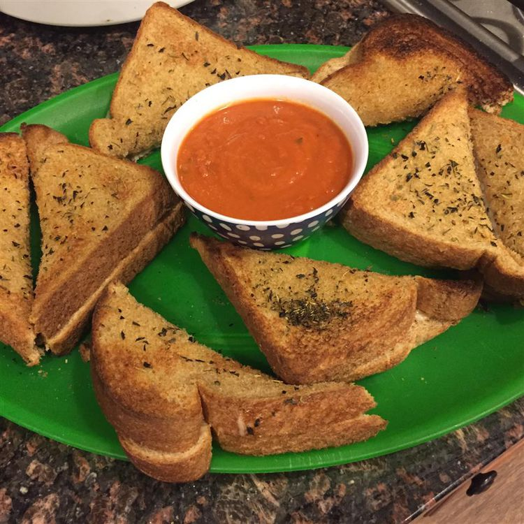

Photo by Allrecipes Member
I came up with this mozzarella grilled cheese recipe for my niece.
I combined grilled cheese sandwiches with garlic bread.
It's tasty, quick, and the perfect appetizer for friends, family, and unexpected guests.
Use a firm white bread for best results.